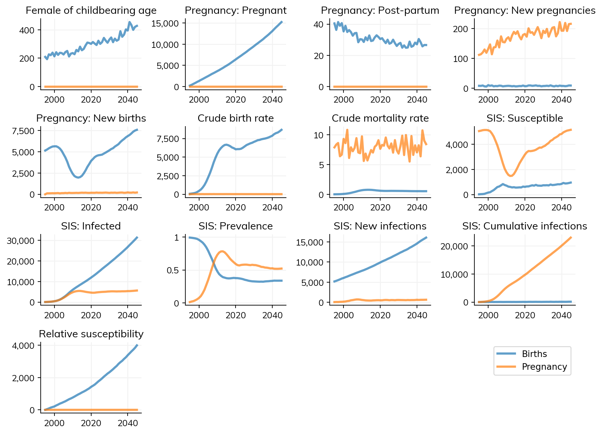

Starsim can include detailed population dynamics through its demographics modules. These modules handle births, deaths, and pregnancy to model realistic population changes over time. By default, Starsim simulations have a fixed population size, but adding demographics allows the population to grow, shrink, and change age structure naturally.
Demographics modules are essential for modeling disease transmission over longer time periods, understanding generational effects, and capturing realistic population dynamics.
Simple usage
Let’s start by comparing two identical simulations, one with demographics enabled and one without:
import starsim as ssimport sciris as scsc.options(jupyter=True)# Simulation parameterspars =dict(diseases='sis', networks='random', verbose=0)# Create simulationssim1 = ss.Sim(label='No demographics', **pars)sim2 = ss.Sim(label='With demographics', demographics=True, **pars)# Run both simulations and plotmsim = ss.parallel(sim1, sim2)msim.plot(['n_alive', 'cum_deaths', 'sis_n_susceptible', 'sis_n_infected'])
Exception ignored while finalizing file <_io.BytesIO object at 0x7f62e2ebbe70>:
Traceback (most recent call last):
File "/opt/hostedtoolcache/Python/3.14.2/x64/lib/python3.14/site-packages/sciris/sc_odict.py", line 1211, in __getattribute__
return odict.__getattribute__(self, attr)
BufferError: Existing exports of data: object cannot be re-sized
Figure(768x576)
Advanced usage: Pregnancy and births
For more detailed modeling, you can use the Pregnancy module instead of simple Births. The pregnancy module models:
Age-specific fertility rates
Pregnancy duration and outcomes
Maternal and neonatal mortality
Mother-to-child transmission pathways
import numpy as npimport pandas as pdimport sciris as scimport starsim as ssimport matplotlib.pyplot as plt# Create age-specific birth and fertility databirth_data = pd.DataFrame({'Year': [2000, 2005, 2010, 2015, 2020, 2025, 2030],'CBR': [40, 35, 30, 31, 32, 30, 28] # Age-specific birth rates})fertility_data = pd.DataFrame({'Time': [2020]*7,'AgeGrp': [15, 20, 25, 30, 35, 40, 45],'ASFR': [0.05, 0.15, 0.20, 0.15, 0.10, 0.05, 0.01] # Age-specific fertility rates})# Create a simple births modulebirths = ss.Births(birth_rate=birth_data)# Create a pregnancy module with custom parameterspregnancy = ss.Pregnancy( fertility_rate = fertility_data, rel_fertility =1000, # Whether data are per person or per 1000 dur_pregnancy = ss.years(0.75), # 9 months pregnancy dur_postpartum = ss.years(0.5), # 6 months postpartum p_maternal_death = ss.bernoulli(0.001), # 0.1% maternal mortality p_neonatal_death = ss.bernoulli(0.02), # 2% neonatal mortality min_age =15, max_age =50,)# Create deaths moduledeaths = ss.Deaths(death_rate=ss.peryear(8)) # 8 deaths per 1000 per year# Create simulationsn_agents =5_000# Number of agentsnga_pop_1995 =106819805# age_data = pd.read_csv('test_data/nigeria_age.csv')ppl = ss.People(n_agents, age_data=age_data)pars =dict(start=1995, people=ppl, n_agents=n_agents, diseases='sis', networks='random', verbose=0)sim1 = ss.Sim(label='Births', **pars, demographics=[births, deaths])sim2 = ss.Sim(label='Pregnancy', **pars, demographics=[pregnancy, deaths])# Plot histograms of the age distributions - simulated vs data at initializationsim1.init() # This creates the populationbins = np.arange(0, 101, 1)init_scale = nga_pop_1995 / n_agentscounts, bins = np.histogram(sim1.people.age, bins)plt.bar(bins, age_data.value.values *1000, alpha=0.5, color='r', label='Data')plt.bar(bins[:-1], counts * init_scale, alpha=0.5, label='Simulated')plt.legend(loc='upper right')plt.ylabel('Population')plt.xlabel('Age')sc.SIticks()# Run nd plot simulationsmsim = ss.parallel(sim1, sim2)msim.plot()
/home/runner/work/starsim/starsim/starsim/run.py:394: RuntimeWarning:
Sim "Pregnancy" has different results keys:
Extra: pregnancy_pregnancies, pregnancy_cbr, pregnancy_n_pregnant, pregnancy_n_postpartum, pregnancy_births, pregnancy_n_fecund
Missing: births_cbr, births_new, births_cumulative
Results may not plot correctly (i.e. axes titles may not be correct for all sims)
ss.warn(warnmsg)
Figure(896x672)

Summary
Demographics modules enable realistic population dynamics in Starsim:
Births: Simple constant or time-varying birth rates
Deaths: Background mortality separate from disease deaths
Pregnancy: Detailed pregnancy modeling with maternal/neonatal outcomes
Key considerations:
Use demographics=True for default birth/death rates
Use birth_rate and death_rate for custom constant rates
Use ss.Pregnancy() for age-specific fertility, pregnancy modeling, and mother-to-child transmission
Demographics automatically enables aging; if you want to use aging without demographics, set use_aging=True